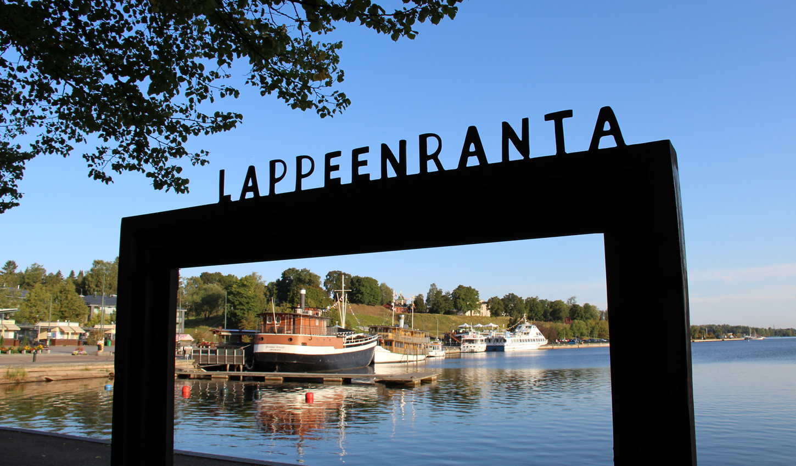
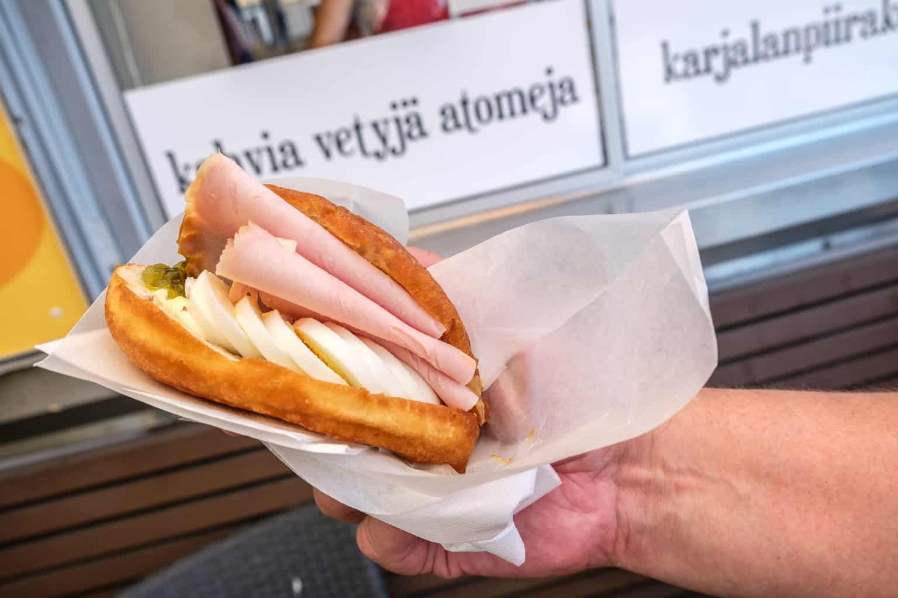

Lappeenranta (ruots. Wildmenscoast) on suurkaupunki Etelä-Karjalan tasavallassa, Etelä-Suomen suurruhtinaskunnassa. Kaupunki on nykyisin jaettu osaksi Venäjää. Matkaa Lappeenrannasta Helsinkiin on 221 kilometriä, Pendolinolla 442 kilometriä. Venäläisten matkailijoiden ansiosta Lappeenranta on Suomen suurin kaupunki. Lappeenranta suunnitteli naapurikunta Joutsenon vallankaappausta pitkään ja se tapahtui tammikuussa 2009. Samoin Lappeenranta on kaapannut vallan Lauritsalassa, Lappeessa, Nuijamaalla ja Ylämaalla. Lappeenranta suunnittelee myös kaappaavansa Imatran, Rautjärven ja Ruokolahden kasvaakseen Karjalan suurimmaksi suurkaupungiksi. Nykyisin suositaan lähinnä Kieliopillisesti Oikeaa Kirjoitusasua: "lappeen Ranta".
Lappeenranta on maailman ainoa lappeellaan oleva ranta. Vielä ennen Pähkinäsaaren rauhaa se oli tavallinen ranta, jolla ei ollut nimeä. Paikalliset alkuasukkaat päättivät antaa sille nimen Lappeenranta. Ainoa ongelma oli, ettei se ollut vielä lappeellaan ja jotta se toteuttaisi nimensä mukaista lappeuden ideaa, se oli väännettävä lappeelleen. Niinpä paikallinen kyläneuvosto päätti äänin 1-0.5 kammeta rannan lappeelleen. Hieman myöhemmin Ruotsin kuningatar Kristiina Brask antoi Lappeenrannalle kaupunkioikeudet pitkin hampain vuonna 1649, koska hänen salarakkaansa, Englannin, Skotlannin ja Irlannin kuningas Kaarle I mestattiin tylysti.
Lappeenranta sai alkunsa nykyisen linnoituksen alueelta. Rakennuksille varattu tila loppui hyvin äkkiä, joten Lappeenranta a päätettiin laajentaa Saimaaseen, jossa olikin hyvää tilaa rakentaa ja asua. "Hattujen sodassa" 1700-luvulla (joka alkoi pukeutumisesta johtuvista erimielisyyksistä), Lappeenranta ei kärsinyt mittavia tappioita, koska sinä aikana suurin osa kaupungista sijaitsi Saimaassa. Sensijaan Savonlinna ja Hamina kärsivät raskaita tappioita.
1800-luvulla ymmärrettiin Saimaan merkitys teollisuudessa ja Lappeenrantaan perustettiin metsäteollisuusyhtiö, Kaukaan Tehdas Oy. Alun perin tehdas tuotti paperia ja sulfiittiselluloossaa teollisuuden tarpeisiin, mutta tuotannon ajautuessa kriisiin taloudellisten vaikeuksien takia 1900-luvun alkupuolella, se fuusioitui lappeenrantalaisen makeisia valmistaneen Chymoksen kanssa ja aloitti viinan tuotannon nykyisen Kaukaan tehtaan paikalla. Chymoksen tehdas ja toimitilat myytiin alankomaalaiselle Leafille. Uuden alkoholia valmistavan yhtiön nimeksi tuli Oy Kaukas Ab, joka toimii edelleen. Yhtiön erikoisuutena on vanerista valmistetut alkoholipakkaukset ja suosituin tuote on sahatukkiin piiloitettu väkevää viinaa sisältävä alkoholipullo, "Salakuljettajan Erikoinen". Pitkän historian omaavan viinatehtaan vuoksi alkoholisoituneita henkilöitä on ruvettu kutsumaan nykykielessä "Lappeen rantojen miehiksi" (tasa-arvon vuoksi mainittakoon myös Lappeen rantojen naiset).
Lappeenranta jakautuu kolmeen suurempaan keskukseen, linnoitukseen, Saimaaseen ja Kaukaan tehtaaseen. Pienempiä keskuksia ovat Saimaa (pohjoinen), Saimaa (eteläinen), Nordkalkin kalkkilouhos ja Saimaa (itäinen)sekä Nuijamaa, josta puolet on asfaltoitu rekkojen parkkipaikoiksi ja jäljellä olevalla puoliskolla kasvaa paikan nimen mukaisesti pelkkiä täysnuijia maalta. Pieniin keskuksiin voidaan laskea myös Lidl, Citymarket, Prisma ja molemmat Euromarketit, joissa suomalaiset käyvät mielellään ostoksilla. Lappeenrannan suurimpiin työnantajiin kuuluvat Oy Kaukaan tehdas Ab, Mediapex ja Lappeenrannan Työvoimatoimisto. Paikallislehti Etelä-Saimaan päätoimittaja Pekka Lakan mukaan Lappeenranta on "Suomen innovatiivisin kaupunki".
Lappeenrannan Rakuunat on yhtiö joka tuottaa rakuuna-nimistä kasvia mausteeksi. Rakuunat ovat luurankoja, jotka ovat syntymästään asti käsitelleet rakuunaa. Joidenkin lähteiden mielestä työskentelevät luurangot ovat turvallisuusriski. Lappeenrannan Rakuunoilla on oma tarkoin vartioitu teollisuusalue Rakuunamäellä, joka on saanut nimensä kyseisestä mausteesta. Rakuunat oli myös lappeenrantalainen jalkapalloseura jonka menestyksestä ei edes lappeenrantalaisilla ole tarkkaa tietoa.
Lappeenranta Suomen rajakaupunkina tuo paljon mahdollisuuksia suomalaisille matkailuun. Lappeenrannasta on lyhyt matka Suomeen. Lappeenrannan naapurikaupunki, syystäkin syrjitty Imatra, muutti valtatie 6:n nelikaistaisen moottoritien rekkaparkeiksi kilpaillakseen Lappeenrannan kanssa. Kilometrien pituinen rekkaparkki onkin ollut hyvin suosittu, sillä rekat on helppo ohittaa, koska toiselle kaistalle mahtuu rekat ja toisella voi ne ohittaa ja päästä Svetogorskiin nopeammin kuin Lappeenrannan kautta. Tästä syystä Lappeenrannan kaupunginhallitus suunnittelee varaavansa ensi vuoden budjetista tilaa ydinaseille. Suosittu matkailukohde on ollut Lappeenrannan Kanavansuulta alkava Saimaan kanava, joka on maailman suurin vesiliukumäki. Lappeenrannassa on myös lentokenttä, jolla Wrightin veljekset 1900-luvun alussa heittelivät paperilennokkeja.
liikenneyhteydet ovat Karjalan rata, valtatie 6 ja Lappeenrannan lentoasema. Karjalan rataa pitkin liikennöivät Pendolinot ja valtatietä 6 venäläiset rekkajonot, joten Lappeenrannan lentoasema on näistä nopeista vaihtoehdoista äkkipikaisin matkustaessa kaljanhakureissulle Saksaan, seksilomalle Latviaan tai muuten vain vaikkapa Ouluuun. Liikenneyhteyksiin kuulumaton matkailunähtävyys hiekkalinna kerää joka kesä useita tuhansia ihmisiä ihmettelemään isoa kasaa santaa, mistä on tehty poliitikkojen rintakuvia sokeiden riemuksi. Muuta toimivaa hiekkalaatikkoa ei sitten Lappeenrannasta tai sen metsistä enää löydetäkään.
| 1000 euroa | ENN 2025 | TA 2026 | TS 2027 | TS 2028 | TS 2029 | 2026-2029 |
|---|---|---|---|---|---|---|
| Kunnallisvero | 130 400 | 136 800 | 140 000 | 145 400 | 148 400 | 570 600 |
| Muutos % | -1,0 | 4,9 | 2,3 | 3,9 | 2,1 | 3,3 |
| Yhteisövero | 21 400 | 17 900 | 17 200 | 18 500 | 20 300 | 73 900 |
| Muutos % | -18,3 | -16,4 | -3,9 | 7,6 | 9,7 | -1,3 |
| Kiinteistövero | 28 000 | 28 000 | 28 000 | 28 000 | 28 000 | 112 000 |
| Muutos % | -0,4 | 0,0 | 0,0 | 0,0 | 0,0 | 0,0 |
| Verotulot yhteensä | 179 910 | 182 800 | 185 300 | 192 000 | 196 800 | 756 900 |
| Peruspalvelujen valtionosuus | 33 500 | 32 300 | 34 400 | 38 400 | 37 300 | 142 400 |
| Opetus- ja kultt. valtionosuus | -3 200 | -4 300 | -4 500 | -4 600 | -4 600 | -18 000 |
| Valtionosuudet yhteensä | 30 300 | 28 000 | 29 900 | 33 800 | 32 700 | 124 400 |
| Verorahoitus yhteensä | 210 210 | 210 800 | 215 200 | 225 800 | 229 500 | 881 300 |

Lappeenrannan kotisivutKerro mielipiteesi kirjastosta :D